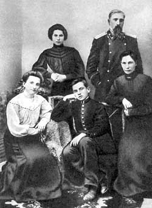

Семья поэта
Отец — дворянин, служил лесничим, предки — из казаков Запорожской Сечи; мать из рода кубанских казаков. Отец Маяковского был очень добрым и сердечным и вместе с тем мужественным человеком. Мать, Александра Алексеевна, вела хозяйство и воспитовала детей. Она была и первой учительницей детей. Их в семье было трое: сам поэт, Люда и Оля.
Cемья Маяковского была одной из тех русских семей, которые, поселившись на Кавказе еще в XIX веке, много сделали для сближения и взаимопонимания народов России и Кавказа.
Семья Маяковских принадлежала к обедневшему дворянскому сословию, так что отцу семейства приходилось трудиться в поте лица, чтобы не только прокормить домочадцев, но и дать образование детям. "Ночь. За стеной бесконечный шепот папы и мамы о рояли. Всю ночь не спал. Свербила одна и та же фраза: "что такое рассрочка платежа?" — вспоминал Володя. Родители были людьми образованными, разбирались в литературе, живописи, очень любили музыку. Мать по молодости "баловалась стихами". Отец прекрасно декламировал, знал наизусть почти всего "Евгения Онегина". Но и Володенька не отставал — даже среди взрослых он лучше всех играл в рифмы и придумывал слова.
